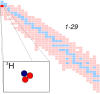

tritium

Definition: Tritium (from Ancient Greek τρίτος (trítos) 'third') or hydrogen-3 (symbol T or 3H) is a rare and radioactive isotope of hydrogen with a half-life of about 12 years. The nucleus of tritium (t, sometimes called a triton) contains one proton and two neutrons, whereas the nucleus of the common isotope hydrogen-1 (protium) contains one proton and zero neutrons, and that of hydrogen-2 (deuterium) contains one proton and one neutron.
Source: Wikipedia
Wikipedia Page
Wikidata Page